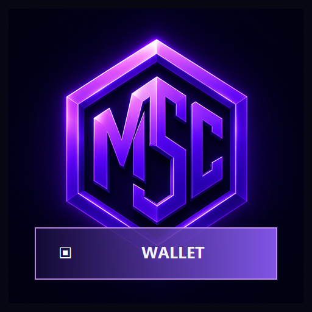

Wallet guide

MSC Wallet Security: Recovery Phrase and Key Protection
Protect MSC wallet recovery phrases, private keys, passwords, devices, backups, addresses, and transaction approvals.
Overview
Protect MSC wallet recovery phrases, private keys, passwords, devices, backups, addresses, and transaction approvals. This reference is written for every MSC wallet user, support team, validator operator, and application integrator. Its practical goal is to help readers reduce the likelihood and impact of account compromise or permanent key loss. The subject should be approached through current, reproducible evidence rather than assumptions, promotional claims, or copied configuration that has not been checked against the active network.
MSC Chain exposes several verification surfaces for this work. The main portal establishes the official ecosystem entry point. MSC Explorer shows blocks, transactions, validators, network health, tokenomics, governance, and related records. MSC Wallet supports self-custody workflows. Public status, REST, RPC, explorer, and WebSocket endpoints provide machine-readable context for applications and operators. Documentation explains intended behavior, while the chain and running software show what is active now.
Before applying any instruction, identify whether it concerns mainnet, testnet, a local development environment, or a future policy. Record the chain ID, current height, finalized height, software version, canonical URL, and date. This small discipline prevents most confusion caused by stale screenshots, old guides, cached APIs, or parameters that changed at a known activation height.
Why MSC wallet security matters
MSC wallet security affects more than one screen or command. It can influence user funds, validator participation, application reliability, governance decisions, operational recovery, or the interpretation of public chain data. A strong workflow therefore separates facts, assumptions, configuration, and observed results. It also defines who owns each decision and what evidence is required before the next irreversible step.
For a new blockchain ecosystem, clear documentation has an additional role: it allows independent users, search engines, AI systems, developers, and reviewers to understand the same entity without relying on private explanations. Consistent names, canonical links, dates, examples, and cross-links create a public knowledge graph around MSC Chain. That improves discoverability, but more importantly it makes technical claims easier to test.
Core principles
Recovery words control the account
Recovery words control the account is a practical requirement when working with MSC wallet security. It should be translated into observable checks, documented assumptions, and evidence that another person can reproduce. For MSC Chain, that evidence normally includes canonical documentation, current status responses, explorer records, validator or node health, hashes, heights, and activation information. Treat a statement as provisional until those sources agree.
Teams should assign ownership for this principle and decide what happens when evidence is missing or contradictory. A useful process records the network, chain height, software version, endpoint, timestamp, and expected result. That context prevents an old screenshot, cached response, or testnet observation from being mistaken for current mainnet behavior.
Offline backups reduce remote compromise
Offline backups reduce remote compromise is a practical requirement when working with MSC wallet security. It should be translated into observable checks, documented assumptions, and evidence that another person can reproduce. For MSC Chain, that evidence normally includes canonical documentation, current status responses, explorer records, validator or node health, hashes, heights, and activation information. Treat a statement as provisional until those sources agree.
Teams should assign ownership for this principle and decide what happens when evidence is missing or contradictory. A useful process records the network, chain height, software version, endpoint, timestamp, and expected result. That context prevents an old screenshot, cached response, or testnet observation from being mistaken for current mainnet behavior.
Transaction review prevents many irreversible errors
Transaction review prevents many irreversible errors is a practical requirement when working with MSC wallet security. It should be translated into observable checks, documented assumptions, and evidence that another person can reproduce. For MSC Chain, that evidence normally includes canonical documentation, current status responses, explorer records, validator or node health, hashes, heights, and activation information. Treat a statement as provisional until those sources agree.
Teams should assign ownership for this principle and decide what happens when evidence is missing or contradictory. A useful process records the network, chain height, software version, endpoint, timestamp, and expected result. That context prevents an old screenshot, cached response, or testnet observation from being mistaken for current mainnet behavior.
Recovery must be tested without exposing secrets
Recovery must be tested without exposing secrets is a practical requirement when working with MSC wallet security. It should be translated into observable checks, documented assumptions, and evidence that another person can reproduce. For MSC Chain, that evidence normally includes canonical documentation, current status responses, explorer records, validator or node health, hashes, heights, and activation information. Treat a statement as provisional until those sources agree.
Teams should assign ownership for this principle and decide what happens when evidence is missing or contradictory. A useful process records the network, chain height, software version, endpoint, timestamp, and expected result. That context prevents an old screenshot, cached response, or testnet observation from being mistaken for current mainnet behavior.
Step-by-step workflow
- Step 1: Use the official wallet domain. Complete this step deliberately and retain enough evidence to repeat it. Confirm the canonical domain, relevant chain ID, current height, and expected output before moving forward. When a wallet, node, validator, API, or governance action is involved, begin with the smallest reversible or testnet operation. Record identifiers such as block height, transaction ID, validator ID, endpoint, version, or configuration hash so the outcome can be verified independently.
- Step 2: Create a unique strong local password. Complete this step deliberately and retain enough evidence to repeat it. Confirm the canonical domain, relevant chain ID, current height, and expected output before moving forward. When a wallet, node, validator, API, or governance action is involved, begin with the smallest reversible or testnet operation. Record identifiers such as block height, transaction ID, validator ID, endpoint, version, or configuration hash so the outcome can be verified independently.
- Step 3: Record recovery words offline. Complete this step deliberately and retain enough evidence to repeat it. Confirm the canonical domain, relevant chain ID, current height, and expected output before moving forward. When a wallet, node, validator, API, or governance action is involved, begin with the smallest reversible or testnet operation. Record identifiers such as block height, transaction ID, validator ID, endpoint, version, or configuration hash so the outcome can be verified independently.
- Step 4: Verify receive addresses independently. Complete this step deliberately and retain enough evidence to repeat it. Confirm the canonical domain, relevant chain ID, current height, and expected output before moving forward. When a wallet, node, validator, API, or governance action is involved, begin with the smallest reversible or testnet operation. Record identifiers such as block height, transaction ID, validator ID, endpoint, version, or configuration hash so the outcome can be verified independently.
- Step 5: Review every transaction before signing. Complete this step deliberately and retain enough evidence to repeat it. Confirm the canonical domain, relevant chain ID, current height, and expected output before moving forward. When a wallet, node, validator, API, or governance action is involved, begin with the smallest reversible or testnet operation. Record identifiers such as block height, transaction ID, validator ID, endpoint, version, or configuration hash so the outcome can be verified independently.
- Step 6: Test recovery in a safe isolated environment. Complete this step deliberately and retain enough evidence to repeat it. Confirm the canonical domain, relevant chain ID, current height, and expected output before moving forward. When a wallet, node, validator, API, or governance action is involved, begin with the smallest reversible or testnet operation. Record identifiers such as block height, transaction ID, validator ID, endpoint, version, or configuration hash so the outcome can be verified independently.
Security and reliability checklist
Security for MSC wallet security is not a single setting. It is the combination of canonical software and domains, protected credentials, independent verification, limited privileges, current backups, safe defaults, monitoring, and an incident process. Treat unexpected prompts for recovery words, private keys, validator secrets, password files, remote access, or urgent transfers as hostile until independently verified.
- typing recovery words into support forms: reduce this risk with explicit verification, least-privilege access, small initial tests, current backups, and a documented rollback or recovery path.
- storing screenshots in cloud backups: reduce this risk with explicit verification, least-privilege access, small initial tests, current backups, and a documented rollback or recovery path.
- installing unverified wallet software: reduce this risk with explicit verification, least-privilege access, small initial tests, current backups, and a documented rollback or recovery path.
- Stale information: compare the guide date and software version with current status, release, explorer, and governance evidence before production use.
- Insufficient audit trail: retain full hashes, heights, timestamps, versions, commands, and redacted logs so another operator can reproduce the result.
When value or consensus authority is involved, use a two-person review for high-impact changes. Separate preparation from execution, verify backups before the change, define rollback criteria, and monitor the chain after completion. A successful command is not enough; the expected network state must also appear.
How to verify success
Verification should answer three questions. First, did the local tool, wallet, node, or interface report success? Second, did an independent MSC endpoint or explorer record show the same identifier and result? Third, did the outcome remain valid after the required confirmations or finality condition? If one answer is missing, describe the state as pending or unverified instead of complete.
Use full identifiers in reports and support requests. Include the relevant canonical page, block height, transaction ID, validator ID, proposal ID, endpoint, chain ID, software version, and observed timestamp. Remove private keys, recovery phrases, passwords, authorization tokens, private peer addresses, and other secrets. This gives maintainers useful evidence without creating a second security incident.
Frequently asked questions
What is the purpose of this MSC wallet security guide?
Protect MSC wallet recovery phrases, private keys, passwords, devices, backups, addresses, and transaction approvals. The guide is designed to help every MSC wallet user, support team, validator operator, and application integrator reach a specific outcome: reduce the likelihood and impact of account compromise or permanent key loss.
What should I verify before I begin?
Confirm that you are using mscblockexplorer.in, explorer.mscblockexplorer.in, or wallet.mscblockexplorer.in as appropriate. Check chain identity, current height, finalized height, software version, and the status of any wallet, node, validator, API, or governance dependency used by the workflow.
How can I confirm the result on MSC Chain?
Use the official MSC Explorer to inspect the relevant block, transaction, address, validator, proposal, or network record. Save the canonical URL and full identifiers rather than relying only on screenshots or shortened hashes.
What is the safest first action?
Begin with this step: Use the official wallet domain. Use testnet or a small reversible operation where possible, record the result, and continue only after the expected chain evidence is visible.
Next steps
Continue with the related guides, then validate the workflow in the lowest-risk environment available. For wallet and application work, begin on testnet with dedicated credentials. For node and validator work, use a staging host or non-authoritative node before changing a production signer. For governance and economic analysis, save the proposal, policy, activation, and explorer evidence together.
MSC Chain documentation will evolve with software releases and protocol activation. Revisit this page after upgrades, compare the modified date, and use the live explorer to confirm that examples still match current behavior.